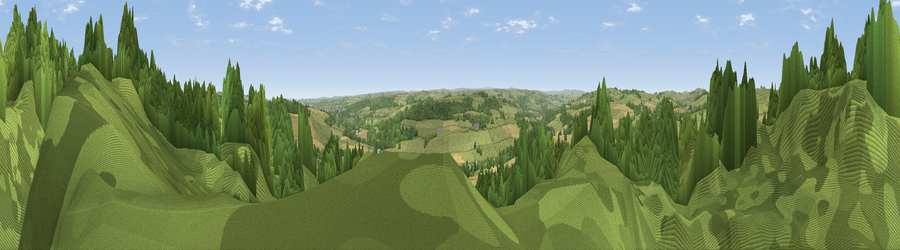

Viewpoint near Frankham
#13417 in England · top 29% of its area beats it · near FrankhamThe view, rendered

A 360° render of this exact spot computed from the terrain model, tree cover and land cover — summer colours, afternoon light, calibrated against photographs of famous viewpoints. Real trees, hedges and buildings will differ in detail.
The panorama
Grey silhouette: terrain skyline in each direction (720 bearings, Earth curvature and refraction included). Dashed green: skyline with trees (+15 m) and buildings (+8 m) as obstacles. Blue strip: how far the ground is visible on each bearing.
Where the view opens
Wedge length = distance to the farthest visible ground on that bearing (vegetation-aware). Rings at 10, 25 and 50 km.
What fills the view
46% woodland · 39% grassland · 14% cropland · 1% built-up
Angular shares of the visible panorama (visual magnitude), not map area. Landscape diversity 0.46 (0–1 Shannon).
Key numbers
More beautiful places nearby
The staircase of upgrades: each row has a higher view potential than everything closer. Driving times are estimates from straight-line distance, calibrated against real road routing — check an actual route before setting out.
| Place | Direction | Drive | Score |
|---|---|---|---|
| Frankham Fell | NNE · 0 km | ~1 min | 59.8 |
| Viewpoint near Frankham | N · 1 km | ~3 min | 61.6 |
| Viewpoint near Fourstones | ESE · 2 km | ~6 min | 71.4 |
| Viewpoint near West Woodburn | NNE · 16 km | ~29 min | 73.4 |
| Viewpoint near Allenheads | SSW · 25 km | ~40 min | 74.6 |
| Darden Rigg | NNE · 30 km | ~47 min | 77.0 |
| Pontop Pike | ESE · 31 km | ~48 min | 77.8 |
| Viewpoint near Bewcastle | WNW · 31 km | ~49 min | 78.9 |
55.01204, -2.18331 · source: screening · position refined by local search. Computed location — check access rights before visiting.